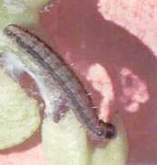

| Home |
| MAIZE |
| 1. Maize Shoot fly |
| 2. Stem Borer |
| 3. Pink Stem Borer |
| 4. Corn worm / Ear worm |
| 5. web worm |
| 6. aphid |
| 7. shoot bug |
| 8. climbing cut worm |
| 9. ash weevil |
| 10. phadka grasshopper |
| 11. leafhopper |
| questions |
| download notes |
PESTS OF MAIZE :: Major Pests :: Web Worm
5. Web worm: Cryptoblabes gnidiella (Pyraustidae: Lepidoptera)
Damage symptoms: The larva first feeds on the lemma of the flowers scraping the chlorphyll and later on the milky grains. The caterpillar causes damage by constructing webs on maize cobs and feeding on the flowers and grains.
Bionomics: Eggs are laid singly on spikelets and grain. They hatch in 3-4 days. Larva has duration of 9-10 days. The full-grown larva is 12 mm long and dark brown. It forms silken webs on cobs and remains inside them and pupates within. Adult is 7 mm across wings with dark grey forewings. Life cycle is completed in 23-24 days.

Management: Spray monocrotophos 36 SL (or) endosulfan 35 EC 1 l/ha.